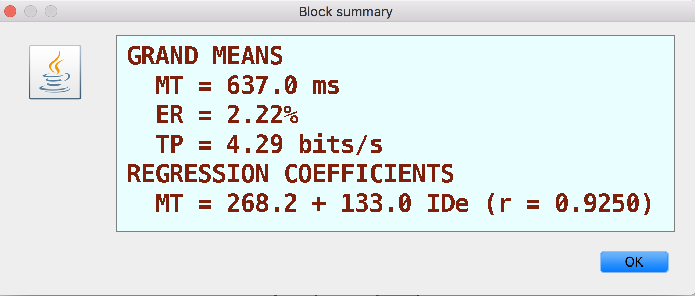
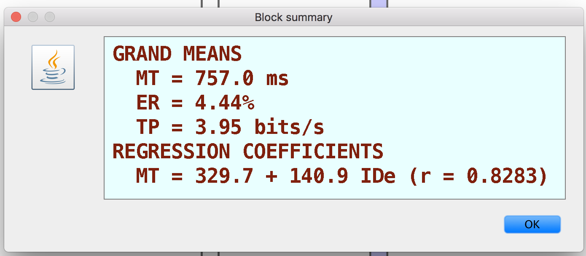
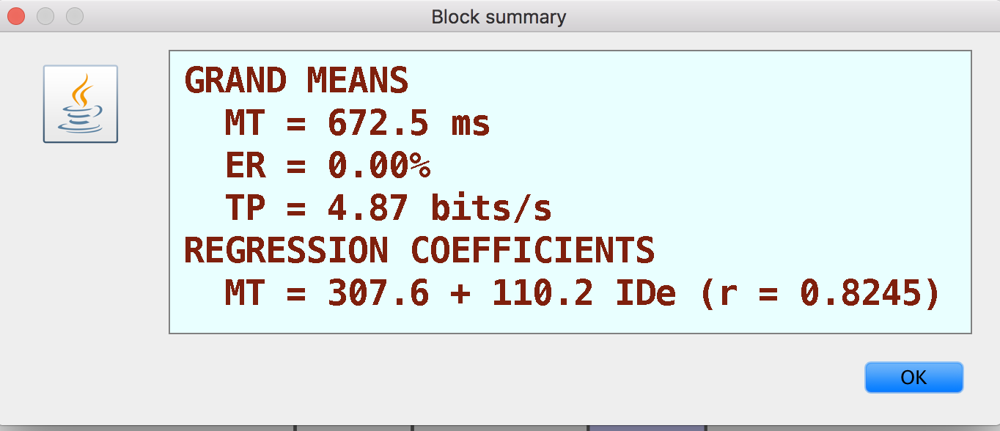
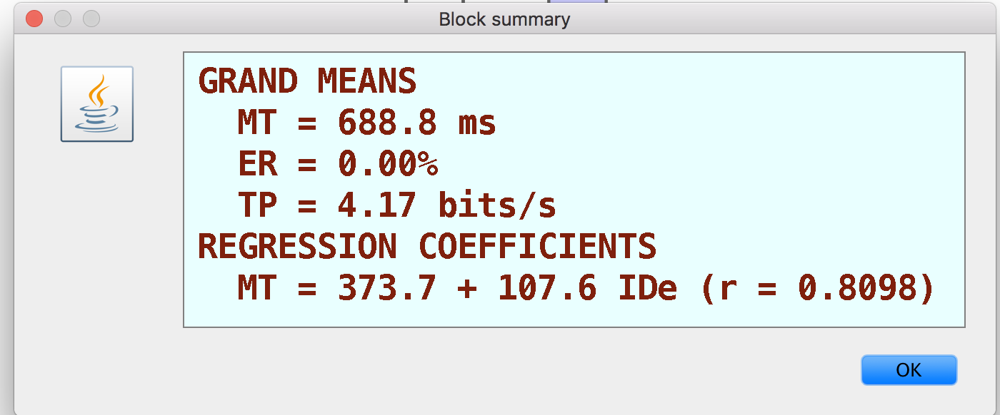
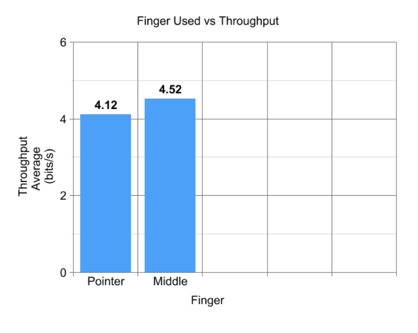

Fitt's Law Study
Authors: Haley Hartin, Scott G. (my boyfriend)
I tested the conditions of using your pointer finger vs middle finger. For the experiment, I went through a GoFitts trial using my pointer finger. I then did it again using my middle finger. I had my boyfriend do the same thing, and I recorded the average throughput from each trial. Both Scott and I, were quicker using out pointer fingers.
Pointer finger results


Middle finger results


Results
